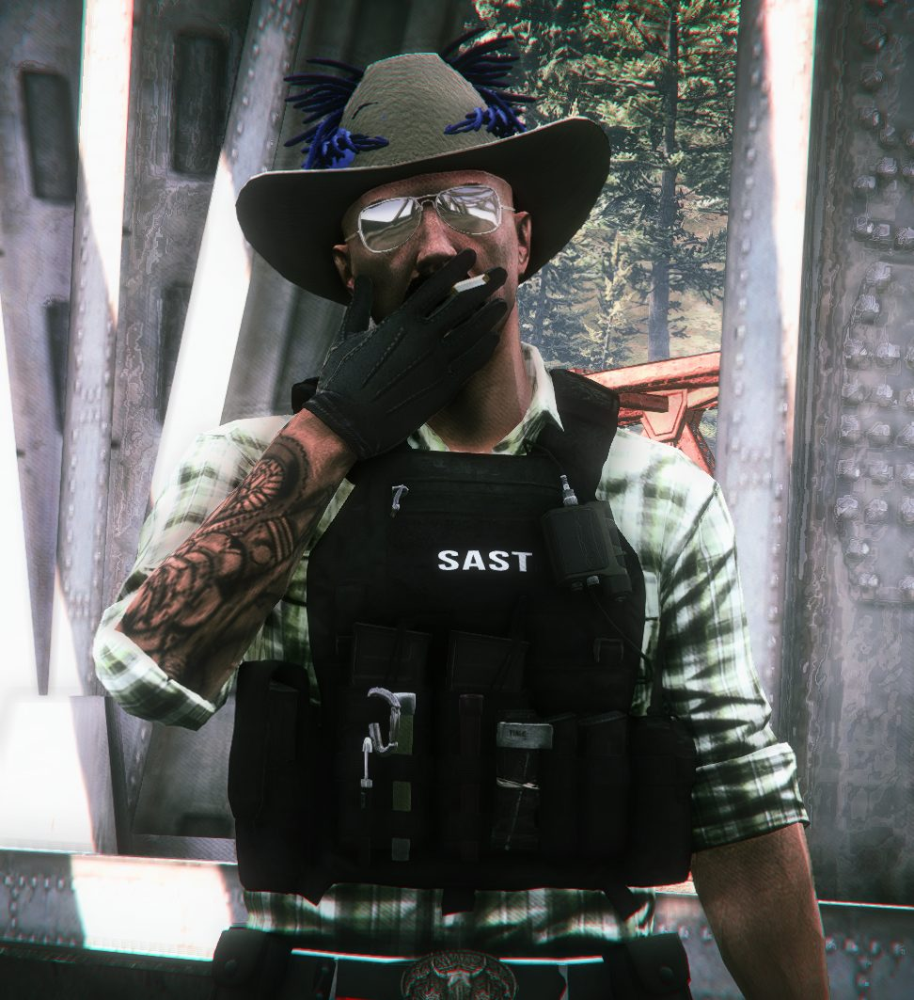
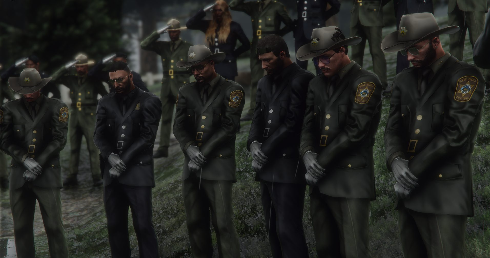
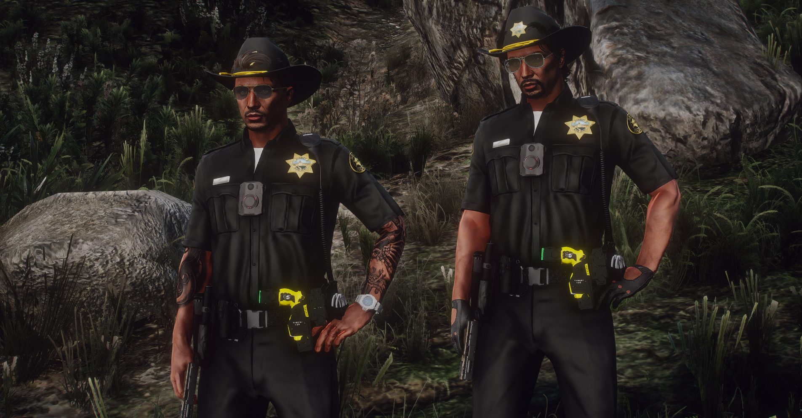

Les Sheriff du nord ne reculent pas. Ils avancent.
1ServiceBlaine County Sheriff's Office
2DistrictsSandy Shores · Roxwood
3BranchesPPD · CID · IAD
~100AgentsEffectif actif en service
1ServiceBlaine County Sheriff's Office
2DistrictsSandy Shores · Roxwood
3BranchesPPD · CID · IAD
~100AgentsEffectif actif en service
DERNIÈRE MISE À JOUR DU SYSTÈME — 19.05.2026
↓ EXPLORER ↓
Blaine County · Notre territoire · Notre loi
Préambule
Bienvenue au BCSO
Vous connaissez le BCSO. Vous connaissez ses agents, ses valeurs, son territoire.
Blaine County, c'est chez nous. Ça l'a toujours été.
Le BCSO a atteint ses limites. Un système qui a prouvé sa force, mais qui aujourd'hui a besoin d'évoluer. De se restructurer. De se réinventer.
Nous ne changeons pas d'identité. Nous la renforçons.
Deux districts. Une chaîne de commandement claire. Trois branches distinctes. Des unités structurées. Une identité visuelle forte.
Blaine County Sheriff Office. Toujours les mêmes. Enfin au niveau.
— Sheriff 355 · Steeve Kant
STRUCTURE BCSO V2
Les Grades
⭐ Office of Sheriff — Autorité Suprême
Supervise l'ensemble du BCSO — PPD, CID et IAD — sans exception ni limite de branche
Sheriff
Under-Sheriff
Deputy Sheriff
PPD
PATROL & PROTECTION DIVISION
Branche principale du BCSO. Patrouille terrain, interventions, maintien de l'ordre. Seule branche donnant accès aux unités spécialisées.
12 gradesOuverte à tousAccès unités
ÉTAT-MAJOR
13CommanderChef de district
12Captain× 2
11Lieutenant× 2
10Major× 1
COMMANDEMENT
09Sergent-Chef× 2
07Sergeant× 2
06Master Deputy× 5
05Senior Deputy× 2
CORPS EXÉCUTIF
04Deputy III× 14
03Deputy II× 14
02Deputy I× 5
01Deputy Trainee× 10
CID
CRIMINAL INVESTIGATION DIVISION
Investigation criminelle. Travail en civil. 100% indépendant de la PPD. Deputy III minimum requis.
6 GRADES INDÉPENDANTS
C6Directeur CIDMat. 293
C5Superviseur CID—
C4Détective Chef—
C3Détective—
C2Enquêteur—
C1Apprenti Enquêteur—
Accès min. Deputy III · Promotions internes · Pas de cérémonie publique
IAD
INTERNAL AFFAIRS DIVISION
Affaires internes. Contrôle des agents. Sergeant minimum.
6 GRADES INDÉPENDANTS
I6DirecteurMat. 270
I5Directeur Adjoint—
I4Superviseur IAD—
I3Inspecteur—
I2Auditeur—
I1Auditeur Stagiaire—
Accès min. Sergeant · Strictement confidentiel · Promotions internes uniquement
MANUEL BCSO · STRUCTURE INTERNE
Les Branches
► PPD · CID · IAD
Le BCSO est structuré en trois branches distinctes, chacune avec ses propres grades, son commandement et ses responsabilités. Tout agent appartient à une seule branche. Les promotions et accès sont gérés de manière indépendante par chaque branche.
⭐ Office of Sheriff — Autorité Suprême
Supervise l'ensemble du BCSO — PPD, CID et IAD — sans exception ni limite de branche
Sheriff
Under-Sheriff
Deputy Sheriff
PPD
PATROL & PROTECTION DIVISION
Branche principale du BCSO. Patrouille terrain, interventions, maintien de l'ordre. Seule branche donnant accès aux unités spécialisées.
GRADES12 grades
ACCÈSOuverte à tous
UNITÉSAccès unités spéc.
CÉRÉMONIEBimensuelle publique
Branche de départ par défaut
CID
CRIMINAL INVESTIGATION DIVISION
Investigation criminelle. Travail en civil. 100% indépendant de la PPD. Enquêtes, dossiers, infiltration.
GRADES6 grades indépendants
ACCÈS MIN.Deputy III PPD
TENUECivil uniquement
CÉRÉMONIEInterne · Confidentielle
Candidature sur dossier · Entretien obligatoire
IAD
INTERNAL AFFAIRS DIVISION
Affaires internes. Contrôle et supervision des agents. Strictement confidentiel. Rapporte directement au Sheriff.
GRADES6 grades indépendants
ACCÈS MIN.Sergeant PPD
VISIBILITÉNon publique
CÉRÉMONIEStrictement interne
Cooptation uniquement · Promotions non communiquées
!
Un agent appartient à une seule branche à la fois. Un transfert de branche est possible mais soumis à validation. Appartenir à une unité spécialisée ne change pas la branche. Les grades des branches CID et IAD sont complètement indépendants des grades PPD.
BLAINE COUNTY SHERIFF OFFICE · COMMAND STRUCTURE
Organigramme
L'autorité, du sommet au terrain. Chaque cellule peut être révélée d'un clic pour découvrir l'agent qui la détient.
3Branches
21Postes officiers
2Districts
★ HONORARY ★
Veteran Office of Sheriff
274 · Valentino Navarro Ancien Assistant Sheriff
N°2
Under Sheriff
270 · Peter Hopper
N°1
SHERIFF
355 · Steeve Kant
N°3
Deputy Sheriff
294 · Xander Hoffman

★ HONORARY ★
Veteran Office of Sheriff
281 · Many Gullit Ancien Under Sheriff
CID
Criminal Investigation
DIRECTION CID · CONFIDENTIEL
Directeur CID
Ghost
Anonymous
Superviseur CID
Python
Anonymous
ÉM
État-Major PPD
COMMANDEMENT TERRAIN · 2 DISTRICTS
Commanders · Rang supérieur
SANDY SHORES

Commander
245 · Jackson Ross
Sandy
ROXWOOD
Commander
329 · James Digger
Roxwood
Captains
SANDY SHORES
Captain
— Vacant —
Sandy
ROXWOOD
Captain
— Vacant —
Roxwood
Lieutenants
SANDY SHORES · 2 POSTES
Lieutenant
204 · Lincoln Johnson
Sandy
Lieutenant
— Vacant —
Sandy
ROXWOOD · 2 POSTES
Lieutenant
269 · Raven Carson
Roxwood
Lieutenant
— Vacant —
Roxwood
Majors
SANDY SHORES · 3 POSTES
Major
249 · Santiago Vegas
Sandy
Major
285 · Iros Riko
Sandy
Major
290 · Kelyan Fernandes
Sandy
ROXWOOD · 3 POSTES

Major
230 · James Robert
Roxwood
Major
354 · Jess Willi
Roxwood
Major
— Vacant —
Roxwood
IAD
Internal Affairs
CONTRÔLE & SUPERVISION
Directeur IAD
270 · Peter Hooper
Directeur Adjoint
219 · Geoffrey Stevens
BCSO · ARCHIVES
N°—
DOSSIER OFFICIEL · MAT. —
ACTIF
BCSO
Matricule
—
Affectation
—
Blaine County Sheriff OfficeV2.0
TERRITOIRE
Les Districts
Deux districts opérationnels couvrent Blaine County. Chacun a son Commander, sa structure locale, ses couleurs et ses unités rattachées.
Sandy Shores
Quartier Général — District Principal
Commandement
CommanderMat. 245
Structure locale
Captain× 2
Lieutenant× 3
Major× 3
Couleurs véhicules
Marron / Blanc
Unités rattachées
SAHPASD · K9 · MARY · Maritime · SRU
ERTSur activation des différents Lead
Roxwood
Poste Avancé — District Nord
Commandement
CommanderMat. 329
Structure locale
Captain× 2
Lieutenant× 3
Major× 3
Couleurs véhicules
Vert / Blanc
Unités rattachées
RangersProtection rurale
TroopersArmes lourdes
ERTSur activation des différents Lead
Commun aux deux districts
—Uniquement la PPD est actives dans les deux districts
—Tenue de patrouille identique — seuls les véhicules diffèrent
—L'ERT est transversale — activée sur ordre du Lead selon les besoins
—L'Office of Sheriff supervise les deux districts sans exception
PPD UNIQUEMENT
Unités Spécialisées
Accessibles uniquement aux agents PPD, via candidature, tests et entretien. Appartenir à une unité ne change pas la branche.
!Pour intégrer une unité : être en branche PPD + candidature → tests → entretien. Validation par le lead de l'unité en question.
E.R.T — Emergency Response Team
Unité d'élite déployée sur ordre de la Centrale, de l'État-Major ou du Lead OP de l'opération. Descentes, braquages, démantèlements. Transversale aux 2 districts.
Les 2 districtsCentrale / Lead OPPPD uniquement
Troopers
Spécialisés dans les armes lourdes catégorie C et D. Convois de saisies hebdomadaires. Interventions armées à Roxwood.
RoxwoodArmes C & DPPD uniquement
Rangers
Protection des zones rurales et naturelles de Blaine County. Régulation de la chasse et de la pêche, sécurité des espaces verts et parcs naturels du nord.
RoxwoodZones ruralesPPD uniquement
S.A.H.P — San Andreas Highway Patrol
Sécurité routière, poursuites haute vitesse, gestion des axes de Blaine County. 4 sous-unités spécialisées.
Sandy Shores4 sous-unitésPPD uniquement
▾
UNITÉ SPÉCIALISÉE · PARTENAIRE BCSO
SOUS-UNITÉS SAHP
SRU — Special Response Unit
Patrouille à grande vitesse sur les axes routiers majeurs du comté. Véhicules d'intervention rapide pour poursuites, urgences et contrôles sur les autoroutes.
A.S.D — Air Support Division
Patrouilles aériennes, surveillance et poursuites depuis les airs. Codes : 10-24 / 10-25 / 10-26
K.9 — Unité cynophile
Détection de substances, recherche de personnes, intervention en situations dangereuses.
MARY — Unité motocycliste
Rapidité et agilité sur tous les axes et zones difficiles d'accès pour les véhicules classiques.
Maritime Unit
Surveillance nautique. Patrouilles en bateau, permis pêche, lutte contre activités criminelles.
ADMINISTRATION INTERNE
Les Pôles
Les pôles assurent le bon fonctionnement du BCSO. Transversaux aux deux districts et à la branche PPD.
Ressources Humaines
Gestion administrative des agents. Suivi des dossiers, mutations et évolutions de carrière.
B.C.S.A
Blaine County Sheriff Academy. Recrutement et accompagnement des futures générations.
Intendance
Budget, contrats et logistique. Approvisionnement des deux districts en matériel et équipements.
Pôle Juridique
Validation des procédures et saisies. Prévention des vices de procédure et traitement des plaintes.
Communication
Partage des activités du BCSO. Image publique et transparence envers la communauté.
Supervisor
Accompagnement terrain, surveillance des performances. Respect des protocoles en opération.
Cérémonies · Évolution · Mérite
Évolution de carrière
Les Promotions
Le système de promotion varie selon la branche. Chaque voie a ses propres règles, son propre rythme et ses propres critères d'évaluation.
🎖️
Branche PPD
Les promotions PPD ont lieu lors d'une cérémonie solennelle bimensuelle — toutes les deux semaines. Officielle, présidée par l'Office of Sheriff ou l'État-Major. Les décisions sont prises en amont sur la base de l'implication, du comportement et de l'activité terrain.
🔍
Branche CID
Les promotions CID se font en interne, décidées par le Directeur CID en concertation avec l'Office of Sheriff. Elles reposent sur la qualité des enquêtes, l'investissement dans les dossiers et le comportement professionnel. Pas de cérémonie publique — la discrétion est de mise.
⚖️
Branche IAD
Les promotions IAD se font en interne, décidées par le Directeur IAD. Strictement confidentielles. Basées sur la rigueur, l'intégrité et l'impartialité démontrées dans les dossiers traités. L'IAD ne communique pas sur ses promotions.
Principes généraux
L’implication, la qualité des interventions et le respect de la chaîne de hiérarchique sont primordiaux.
Aucun agent ne peut se promouvoir lui-même — toute promotion vient exclusivement de la hiérarchie
Un agent sanctionné ou en période probatoire ne peut pas être promu
Les promotions PPD sont publiques et célébrées — celles de CID et IAD restent internes
Conduite · Honneur · Professionnalisme
Conduite des agents
Code Déontologique
Règles de conduite applicables à chaque agent du BCSO, en service et hors service.
Prise de service
La prise de service se fait au poste et doit être annoncée par radio après s'être équipé. Tout agent en service porte obligatoirement la tenue BCSO réglementaire. En civil, il est interdit d'être en service et de répondre aux appels (hors unités autorisées). Hors service : déposer tout l'équipement au vestiaire, y compris la radio.
Attitude envers les citoyens
Rester professionnel, courtois et à l'écoute en toutes circonstances. Garder son sang-froid face aux citoyens énervés — réagir de manière agressive aggrave le conflit. Même hors service, l'image de l'agent doit être irréprochable.
« Respecter la population, c'est gagner son respect. »
Tenues
Tenue de patrouille réglementaire selon le grade — aucune modification acceptée
Tenue de cérémonie obligatoire lors des cérémonies bimensuelles, rangée au vestiaire en permanence
Tenues d'unité validées par le pôle unité — tout dresscode non conforme = avertissement
Tenue d'opération imposée avant le départ — sans la bonne tenue, l'agent reste au poste
Équipement de base
Plaque sur la tenue · Radio · Menottes · Jumelles · Tazer · Matraque
Max 80 munitions 9mm (arme A1)
Max 180 munitions 9mm supp. (arme A2)
5 Dolipranes · 5 Kits de réparation
Utilisation de l'armement — ISTC & CEVITAL
4 règles de sécurité fondamentales (ISTC) :
Une arme est toujours considérée comme chargée
Ne jamais pointer le canon sur ce qu'on ne veut pas neutraliser
Index hors de la queue de détente tant que la visée n'est pas alignée
Être sûr de son objectif et de son environnement
Chronologie CEVITAL en 7 temps :
CERTITUDE — Confirmer la cible, analyser la sécurité
ELÉVATION — Élever l'arme, aligner, reconfirmer
VISÉE — Alignement sur l'objectif
INDEX — Ramener l'index sur la détente
TIR — Départ du projectile
ANALYSE — Sortir de l'effet tunnel
LATÉRALITÉ — Recherche d'infos autour de la position
!
Armes A2/A3 : autorisation du Lead OP ou État-Major obligatoire, ou si les malfaiteurs sont armés automatiquement ou en grand surnombre. Tout abus = sanction sévère.
Codes de conduite véhicule
CODE 1 — Discret
Patrouille sans intervention
Cambriolage / stupéfiants (coupez à 1 km)
CODE 2 — Gyrophares
Recherche de suspect
Convois
Véhicule à l'arrêt en intervention
CODE 3 — Urgence
10-99 · Fusillade · Otage
Demande de renfort
Course poursuite
Communication radio
Codes radio "10-..." obligatoires — transmissions courtes et précises uniquement. Seul le passager communique en radio — le conducteur se concentre sur la route. En course poursuite : rester sur la fréquence dispatch.
Passage en juridiction LSPD : annonce obligatoire sur radio 1 — "BCSO à LSPD, nous rentrons dans votre juridiction pour [RAISON]". Rester sur radio 1 le temps du passage.
Le BCSO gère Blaine County — partie nord de San Andreas. Le LSPD gère la partie sud. Une zone de juridiction commune existe entre les deux territoires. En dehors de Blaine County, le BCSO opère sous conditions strictes et en coordination avec le LSPD.
Règles internes des postes
Règlement Intérieur
Applicable aux postes de Sandy Shores et Roxwood. Toute personne pénétrant dans le poste est considérée comme ayant pris connaissance et approuvé ce règlement.
⚠️
Ce règlement peut être modifié à tout moment sans préavis par l'Office of Sheriff. — Sheriff 355 · Steeve Kant
ART. 01Accès au Poste▼
Les postes sont des établissements officiels du Blaine County Sheriff Office
Toute personne entrant doit se conformer aux directives et aux instructions de l'Office of Sheriff et de l'État-Major
Zones interdites au public et non-agents (sauf autorisation) : Armurerie · Saisies · Vestiaires · Cellules · Étage 1 · Étage 0 (sauf accueil) · Étage -1 · Héliport
Toute personne extérieure doit s'identifier et déposer tout objet potentiellement dangereux
DOJ, avocats, juges et gouvernement doivent être accompagnés par un agent pour circuler
ART. 02Discipline et comportement▼
Respect, courtoisie et professionnalisme exigés de toutes les personnes présentes
Interdit d'élever la voix, provoquer des agents, perturber le service ou interférer dans les procédures
Violences verbales ou physiques envers un agent : expulsion immédiate et/ou poursuites judiciaires
Toute personne dans l'enceinte doit obéir aux injonctions d'un gradé
Strictement interdit de porter des coups en dehors de la salle d'entraînement
ART. 03Port d'armes et sécurité▼
Seuls les agents du BCSO, LSPD et SAMS sont autorisés à porter une arme dans le poste
Avocats, procureurs, juges et visiteurs doivent confier leurs armes à l'agent les accueillant
Interdit d'effectuer tout enregistrement vidéo, audio ou photo — GoPro retirées, pas seulement éteintes
Dérogation DOJ : enregistrement autorisé uniquement devant le prévenu ou en salle d'interrogatoire
Tout personnel extérieur peut être palpé dès l'entrée
ART. 04Tenue et présentation des agents▼
Uniforme réglementaire complet obligatoire, y compris le chapeau officiel, sauf directive contraire
Uniforme propre, repassé et conforme — aucun ajout ou modification non autorisé toléré
Hygiène irréprochable — tenue négligée = rappel à l'ordre ou sanction disciplinaire
ART. 05Hygiène et utilisation des locaux▼
Strictement interdit de fumer dans tout le bâtiment — expulsion immédiate
Respect de la propreté des lieux — dégradations et tags entraînent des sanctions
Toute personne hors service public patiente en salle d'attente
Le matériel du BCSO est réservé exclusivement aux agents habilités
ART. 06Interrogatoires et procédures▼
Un avocat peut assister son client mais ne peut pas interférer dans l'enquête
Conversations, documents et éléments d'enquête sont confidentiels
Salles d'interrogatoire réservées aux procédures officielles uniquement
Seuls les agents en charge du dossier conduisent un interrogatoire, sauf ordre contraire
ART. 07Confidentialité▼
Toute information sur une enquête, arrestation ou opération reste strictement confidentielle
Discussions sensibles uniquement dans les bureaux fermés, jamais en zone publique
Toute fuite vers médias ou réseaux sociaux = sanctions disciplinaires sévères
ART. 08Hiérarchie et ordres▼
Tout agent dans l'enceinte est soumis à la hiérarchie du BCSO
En cas d'incident ou de crise, les ordres du plus haut gradé présent s'appliquent immédiatement
Les personnels extérieurs ne peuvent entraver une intervention en cours
ART. 09Sanctions▼
Expulsion immédiate du poste
Suspension d'accès temporaire ou définitive
Mise en détention si l'infraction le justifie
Sanction disciplinaire interne
ART. 10Gestion des détenus▼
Traitement avec respect et dignité, sans usage de force disproportionnée
Fouilles conformes aux procédures du BCSO
Surveillance permanente — aucun contact non autorisé toléré
Interdit de fournir au détenu objets, nourriture ou équipement non prévus par la procédure
ART. 11Véhicules et stationnement▼
Seuls les véhicules officiels du BCSO et des services publics autorisés dans la zone réservée
Vitesse maximale dans le parking : 15 km/h
Stationnement uniquement dans les emplacements prévus
Portail obligatoirement fermé après chaque entrée ou sortie
ART. 12Armurerie▼
Accès strictement réservé aux agents habilités
Interdit de manipuler une arme ou sortir du matériel sans procédure validée
Toute anomalie signalée immédiatement au pôle intendance ou à la hiérarchie
ART. 13Dotation individuelle▼
Maximum par agent : 5 nourriture · 5 boisson · 5 anti-douleur · 5 kits de réparation
Toute quantité dépassant ces limites est interdite sauf autorisation exceptionnelle
Non-respect = sanctions disciplinaires
ART. 14Relations avec les médias▼
Médias non autorisés à filmer ou interviewer sans autorisation du Sheriff ou de l'État-Major
Aucun agent (sauf désignation explicite) ne fait de déclarations publiques sur une enquête en cours
Journalistes : zones publiques uniquement, conformément aux instructions des agents
S'applique à tous les agents quel que soit leur grade ou leur ancienneté
I. — Objet et portée du règlement
Le présent règlement définit les principes de fonctionnement, de coopération et de respect mutuel entre les trois branches du Blaine County Sheriff's Office : la PPD, le CID et l'IAD.
Il s'applique à tous les agents, quel que soit leur grade ou leur ancienneté. Toute violation expose l'agent concerné à des sanctions disciplinaires.
II. — Principe fondamental : indépendance des branches
1.Les trois branches du BCSO sont indépendantes dans leurs missions, leurs procédures et leur chaîne de commandement.
2.Aucun agent d'une branche ne peut donner un ordre opérationnel à un agent d'une autre branche, intervenir dans sa gestion interne, ou exiger un rapport hors cadre légal ou administratif.
Exception — IAD : En tant que branche de contrôle interne, l'IAD dispose d'un pouvoir d'injonction dans le strict cadre de ses enquêtes disciplinaires officielles. Cette exception ne saurait être invoquée en dehors de ce cadre.
3.Seul l'Office of Sheriff peut arbitrer un conflit interservice.
III. — Respect des périmètres de compétence
PPD
Patrouille & Sécurité Publique
✓Maintien de l'ordre, interventions, contrôles routiers
✓Peut sécuriser une scène pour le CID
✗Ne peut interférer dans une enquête CID ou procédure IAD
✗Ne doit pas entraver une enquête CID
CID
Enquêtes Criminelles
✓Investigations, filatures, interrogatoires, scènes de crime
✗Ne peut exiger d'un agent PPD une action hors protocole
✗Ne peut consulter les dossiers IAD
✗Ne doit pas influencer une procédure interne
IAD
Affaires Internes
✓Enquêtes disciplinaires, audits, conformité
✓Peut consulter dossiers PPD & CID dans le cadre d'une enquête
✗Ne peut intervenir dans une enquête CID sauf agent impliqué
✗Ne doit pas interférer dans les opérations PPD ou CID
IV. — Communication interservice
1.Les échanges entre branches doivent être professionnels et factuels.
2.Toute demande interservice doit impérativement transiter par l'un des canaux officiels :
— Ticket interne · Mail officiel · Rapport formel —
3.Les communications informelles ne peuvent pas servir de base à une décision disciplinaire ou opérationnelle.
V. — Coopération sur le terrain
PPD
Sécurise la scène
CID
Mène l'enquête
IAD
Observe ou audite, sans interférer
2.Le premier agent sur place garde la gestion jusqu'à l'arrivée de la branche compétente, puis se retire.
3.Aucun agent ne peut imposer sa présence sur une scène qui ne relève pas de sa branche.
VI. — Conflits interservice
Agent signale
→
Chef de branche
→
Si non résolu
→
Office of Sheriff
2.Les agents ne doivent jamais régler un conflit interservice sur le terrain.
3.Les comportements irrespectueux doivent être transmis à l'IAD. Le signalement n'est pas facultatif.
VII. — Confidentialité et accès aux dossiers
1.Chaque branche possède ses propres dossiers, archives et bases de données.
2.L'accès croisé est strictement interdit, sauf réquisition de l'Office ou demande écrite validée par les deux Chefs de branche.
3.L'IAD peut consulter les dossiers PPD et CID uniquement dans le cadre d'une enquête interne dûment ouverte.
VIII. — Neutralité et impartialité
1.Les agents doivent respecter les missions des autres branches sans jugement ni ingérence.
2.Les agents IAD doivent rester neutres et ne pas interférer dans les opérations PPD ou CID.
3.Les agents CID ne doivent pas utiliser leur statut pour influencer une procédure interne.
4.Les agents PPD ne doivent pas entraver une enquête CID.
IX. — Sanctions en cas de non-respect
Le non-respect du présent règlement peut entraîner les sanctions suivantes, prononcées du plus léger au plus grave :
Niveau IRappel à l'ordre
Niveau IIRapport disciplinaire versé au dossier de l'agent
Niveau IIIOuverture d'une enquête IAD
Niveau IVSanction administrative prononcée par le Chef de branche ou l'Office of Sheriff
Lu, approuvé et signé par l'autorité compétente
Office of Sheriff — Blaine County
Steeve Kant
Sheriff — Blaine County Sheriff's Office
Fait le 03 mai 2026
Signature
MANUEL BCSO
Les Formations
À partir du grade Deputy III, chaque agent peut se spécialiser dans des domaines clés. Ces formations ouvrent de nouvelles responsabilités opérationnelles.
FORMATION 01
Lead OP
Deputy III minimum
Formation à la gestion des opérations au sein du BCSO.
—Gestion des effectifs sur le terrain
—Conduite d'une opération à risque
—Automatismes opérationnels
—Coordination inter-unités
FORMATION 02
Négociateur
Deputy III minimum
Formation à la gestion des crises et prises d'otage.
—Bonne gestion d'une négociation
—Communication avec le Lead OP
—Coordination avec le SAMS
—Gestion psychologique des suspects
FORMATION 03
Centrale
Deputy III minimum
Formation à la gestion de la centrale opérationnelle.
—Gestion des patrouilles en temps réel
—Réception et dispatch des appels
—Coordination des unités terrain
—Gestion des informations radio
Procédure de candidature
01
Vérifier le grade minimum requis
02
Ouvrir un ticket Ressources Humaines
03
Préciser la formation et votre grade
04
Attendre validation et convocation
MANUEL BCSO
Codes Radio
La radio est le pilier de toute opération. Ces codes doivent être maîtrisés dès le grade Deputy Trainee. Transmissions courtes et précises. Seul le passager communique — le conducteur se concentre sur la route.
Service & Communication
10-4Affirmatif
10-5Négatif
10-6Pause de service
10-8Prise de service
10-9Réitérer le message
10-10Fin de service
10-11En direction de... (ex: Adam 70, 10-11 dernier appel)
10-12En attente de dispatch
10-19Retour au poste (préciser si retour avec suspect)
10-20Position de l'agent
10-38Dernier appel citoyen
10-41Début de patrouille
10-42Fin de patrouille
10-45Demande d'informations
10-48Contrôles en cours (CODE 4 ou 5)
Codes ASD — Aviation
10-24Atterrissage sur zone
10-25Sur zone
10-26Ravitaillement
Incidents & Opérations
10-13Agent blessé (préciser CODE 4 ou 5)
10-14Braquage
10-15Fusillade
10-17Prise d'otage
10-18Demande de renfort d'urgence sur position
10-21Regroupement d'individus armés
10-23Arrivée sur les lieux
10-30Dernière position (perdu de vue)
10-31Course poursuite
10-32Poursuite à pied
10-50Accident
10-58Go fast
10-59Vol à l'arraché
10-61Vente de drogue en cours
10-62Manifestation ou regroupement illégal
10-71Coup de feu
10-99TOUTES UNITÉS SUR POSITION · AGENT EN DANGER
10-100Policier à terre (suite au 10-99)
Intitulés de patrouille
LincolnSolo
AdamDuo
TangoTrio
X-RayQuatuor
MARYMotorisée
ASDAérienne
HubertMaritime
SRUSpecial Response Unit · Intervention rapide autoroutes
VictorCyclisme
Codes véhicules
Code 0Individu perdu de vue
Code 1Sans gyrophare / sans sirène
Code 2Gyrophare / sans sirène
Code 3Gyrophare / avec sirène
Code 4Situation sous contrôle
Code 5Besoin de renfort
Code 6Recherche d'individu dans la zone
MANUEL BCSO
Procédures
⚠️Tout vice de procédure peut permettre à l'individu d'obtenir une remise de peine. Appliquer scrupuleusement chaque étape.
Palpation
INSPECTION PHYSIQUE
Détection d'arme. Possible pour faits mineurs. Obligatoire pour toute personne mise dans un véhicule de police.
—Visage dissimulé
—Holster avec arme visible
—Proximité d'un lieu de crime majeur
—Exhibition d'arme / couteau
—Port d'un gilet pare-balles par le suspect
Fouille
INSPECTION COMPLÈTE
Poches, sac, vêtements. Doit être effectuée par un agent du même sexe. Obligatoire pour délits majeurs et mineurs (se référer au code pénal).
Nécessite la lecture des droits Miranda au préalable — sinon palpation uniquement.
Droits Miranda
À lire lorsque l'individu est conscient. Si traumatisme : hôpital d'abord. Les droits doivent être lus avant que la personne rentre en cellule.
TEXTE OFFICIEL
Madame / Monsieur, nous sommes le [DATE], il est actuellement [HEURE] et vous êtes placé(e) en état d'arrestation pour les faits suivants : [CITER LES FAITS]
Vous avez le droit de garder le silence.
Si vous renoncez à ce droit, tout ce que vous direz pourra et sera utilisé contre vous devant une cour de justice.
Vous avez le droit à un avocat et d'avoir un avocat présent lors de l'interrogatoire.
Si vous n'en avez pas les moyens, un avocat pourra être commis d'office si disponible.
Vous avez le droit à boire et à manger ainsi que des soins médicaux.
Avez-vous bien compris vos droits ? Souhaitez-vous un avocat, des soins médicaux ou à boire et à manger ?
Les droits Miranda doivent être lus à voix haute. Au-delà de 2 lectures, les droits sont considérés comme compris par l'individu.
Arrestation selon la gravité
01
Délit mineur
Procédure classique. Avocat demandé → ticket intranet. Sans réponse en 10 min → continuer. Réduction possible jusqu'à 20% selon coopération.
02
Délit majeur
Se réferer au livret des peines pour le traitement de ces délits
03
Crime
Le procureur doit être obligatoirement présent. Consulter le Code Pénal pour la procédure complète.
!Récidive — 2 mentions du même délit dans le casier : appel procureur obligatoire dès la rédaction du 3ème incident. Si non présent → email DOJ sur l'intranet.
Saisies & Casier judiciaire
Toute saisie doit être déposée dans le casier dans un délai de 2 heures maximum. Non-respect = poursuites judiciaires. La vérification du casier est obligatoire à chaque arrestation pour détecter les récidives.
10-31 sur juridiction LSPD
Lors d'un 10-31 sur la juridiction LSPD, l'annonce radio n'est pas obligatoire en code 4. En revanche, il est impératif de basculer sur leur fréquence en cas de demande d'un code 5.
MANUEL BCSO
Protocoles d'Intervention
Protocoles d'intervention standardisés du BCSO. Cliquez sur un protocole pour afficher le schéma détaillé.
01
Vente de stupéfiants
Procédure d'interpellation lors d'une vente de stupéfiants en flagrant délit.
▾
02
Go Fast
Course-poursuite, interception et saisie d'un go-fast.
▾
03
Conteneur / ATM
Braquage de conteneur ou ATM, course-poursuite et fouille.
▾
04
Vols de sacs
Vol de sac à l'arraché, interpellation et amende.
▾
05
Supérette
Braquage à main armée d'une supérette, négociation, course-poursuite et amende.
▾
06
Protocole Fusillade
CODE 3 · 10-99 · INTERVENTION ARMÉE
▾
MANUEL BCSO · CARTE OPÉRATIONNELLE
La Juridiction
▸ BCSO · LSPD · Zone partagée
Cliquez sur une zone de la carte ou sur une card pour afficher les détails opérationnels.
ROXWOOD
BCSO · ZONE VERTE · NORD
SANDY SHORES
BCSO · ZONE BEIGE · CENTRAL
JURIDICTION PARTAGÉE
BCSO + LSPD
LSPD SUD
URBAIN · LOS SANTOS
RÈGLE · ZONES HORAIRES01:00 — 13:00
▸
Zones levées — Entre 01h00 et 13h00, les restrictions de juridiction sont suspendues. Un agent du district Roxwood peut patrouiller en zone Sandy Shores, et inversement.
▸
Cohésion de district obligatoire — Les agents doivent patrouiller avec les membres de leur propre district. Le mélange de districts n'est pas autorisé.
▸
Exception — Re-dispatch — En cas d'unités insuffisantes, un re-dispatch inter-districts peut être autorisé par le commandement.
JURIDIQUE
Justice
⚠️Il est formellement interdit d'abuser et de rajouter des peines inexistantes. Le Code Pénal fait foi en toutes circonstances.
Autorise à pénétrer et examiner un lieu précis. Permet d'arrêter un potentiel suspect. En flagrant délit dans un domicile : aucun mandat nécessaire — appeler une agente.
Mandat d'arrêt
Ordonne de rechercher et arrêter l'individu afin de le traduire en justice ou faire appliquer une peine déjà prononcée.
Mandat de perquisition
Résulte d'investigations. Permet de démontrer la présomption d'infractions délictuelles et de prouver l'innocence ou la culpabilité.
Mandat de saisies
Ordonne la récupération des biens notés dans le mandat. Peut être délivré en cas de régularisation de dette ou d'inculpation.
Tous les mandats sont délivrés par un procureur ou un juge. Un représentant de la justice doit être présent pour attester du bon déroulement.
Articles fondamentaux
ART. 1 — Présomption d'Innocence
Tout accusé est présumé innocent jusqu'à preuve du contraire. L'accusé n'est pas tenu de prouver son innocence. Tout doute raisonnable profite à l'accusé.
ART. 2 — Droit à un procès équitable
Tout accusé a droit à un procès public et équitable dans un délai raisonnable. En cas de délai dépassé, l'individu est mis sous bracelet électronique.
ART. 3 — Droit de la défense
L'accusé a le droit d'être assisté d'un avocat dès son arrestation. Si l'accusé ne peut pas se permettre un avocat, l'État doit lui en fournir un gratuitement.
ART. 9 — Vice de procédure
Tout acte en violation des droits de l'accusé constitue un vice de procédure. Peut entraîner l'annulation du procès, l'exclusion de preuves ou l'abandon des charges.
Avocats
Si le suspect demande un avocat, faire la demande sur l'intranet. Sans réponse dans les 10 minutes, la procédure continue. Tout agent ne respectant pas cette règle s'expose à des sanctions disciplinaires.
DOJ & Cour Suprême
Le DOJ est indépendant, sous la direction du Procureur Général. Il peut sanctionner les membres des services publics. La Cour Suprême juge et détermine les peines. Le BCSO applique les décisions du Procureur, tout grade confondu.
Système de Mutations
Cliquez sur une section pour développer son contenu.
📅Calendrier des mutations
Fenêtres d’ouverture mensuelles — S1 → S4
▶
S1
SEMAINE 1
Ouverture des demandes. Dépôt du formulaire auprès du commandement direct.
S2
SEMAINE 2
Instruction des dossiers par le commandement concerné.
S3
SEMAINE 3
Consultation inter-districts ou inter-branches si nécessaire.
S4
SEMAINE 4
Notification à l'agent. Prise de poste si accord validé.
● Prise d'effet le 1er du mois suivant la validation.
▶▶Procédure de mutation
6 étapes — cliquez chaque étape pour les détails
▶
01
DÉPÔT DE LA DEMANDE▶
Demande écrite adressée au commandant direct — préciser le district ou la branche visée ainsi que les motivations.
02
VALIDATION COMMANDANT ACTUEL▶
Évaluation du dossier : ancienneté, discipline et performance de l'agent avant transmission.
03
TRANSMISSION AU DESTINATAIRE▶
Le commandant d'accueil évalue ses besoins en effectifs et la compatibilité du profil.
04
CONCERTATION INTER-COMMANDEMENT▶
Les deux commandants échangent et rendent une décision commune.
⚬ DÉCISION CONJOINTE
✕ REFUS
L'agent reste en poste. Nouvelle demande au cycle suivant.
✓ ACCORD
Dossier transmis à l'Office pour validation finale.


'/><circle cx='32' cy='24' r='10' fill='%23555'/><path d='M14 60 C14 44 24 38 32 38 C40 38 50 44 50 60 Z' fill='%23555'/></svg>)